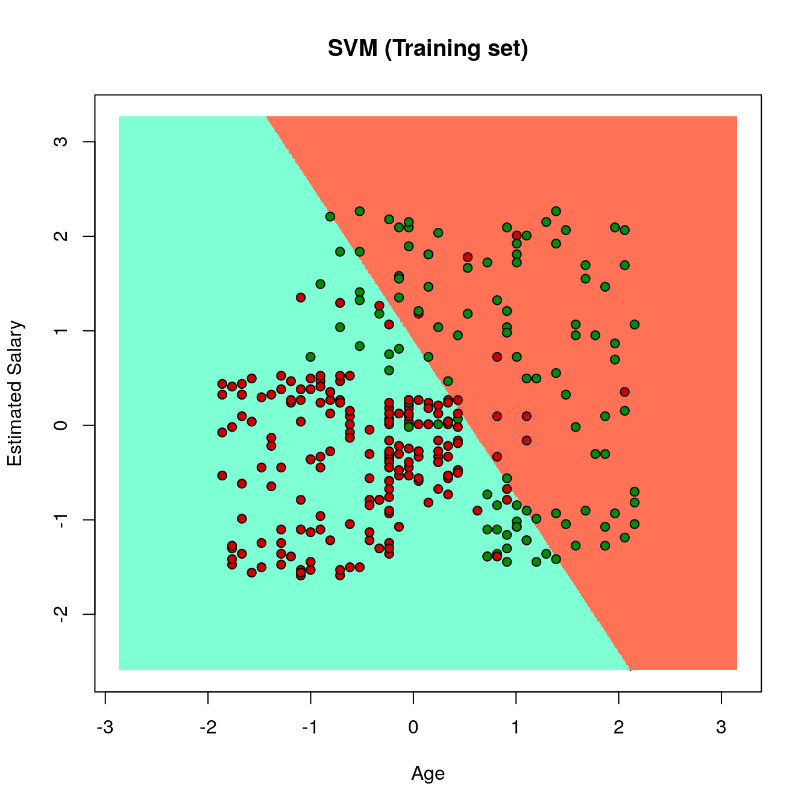
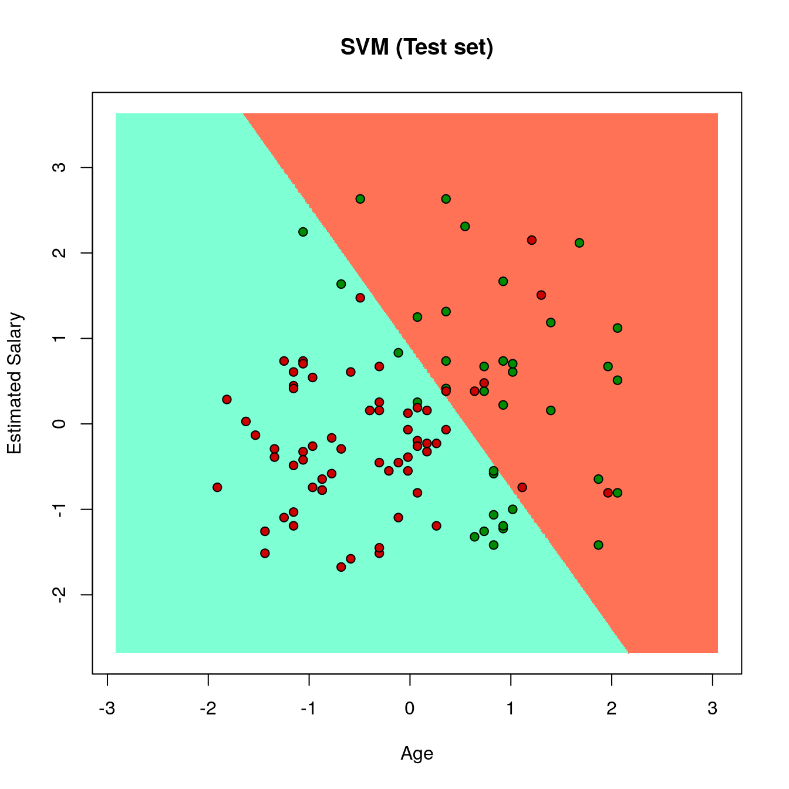

21 Who buys Social Network ads
Datasets:
Social_Network_Ads.csv-
Algorithms:
- Support Vector Machines
21.2 Introduction
Source: https://www.geeksforgeeks.org/classifying-data-using-support-vector-machinessvms-in-r/
21.3 Data Operations
21.3.2 Importing the dataset
# Importing the dataset
dataset = read.csv(file.path(data_raw_dir, 'Social_Network_Ads.csv'))
dplyr::glimpse(dataset)
#> Rows: 400
#> Columns: 5
#> $ User.ID <int> 15624510, 15810944, 15668575, 15603246, 15804002, 157…
#> $ Gender <fct> Male, Male, Female, Female, Male, Male, Female, Femal…
#> $ Age <int> 19, 35, 26, 27, 19, 27, 27, 32, 25, 35, 26, 26, 20, 3…
#> $ EstimatedSalary <int> 19000, 20000, 43000, 57000, 76000, 58000, 84000, 1500…
#> $ Purchased <int> 0, 0, 0, 0, 0, 0, 0, 1, 0, 0, 0, 0, 0, 0, 0, 0, 1, 1,…
tibble::as_tibble(dataset)
#> # A tibble: 400 x 5
#> User.ID Gender Age EstimatedSalary Purchased
#> <int> <fct> <int> <int> <int>
#> 1 15624510 Male 19 19000 0
#> 2 15810944 Male 35 20000 0
#> 3 15668575 Female 26 43000 0
#> 4 15603246 Female 27 57000 0
#> 5 15804002 Male 19 76000 0
#> 6 15728773 Male 27 58000 0
#> # … with 394 more rows
# Taking columns 3-5
dataset = dataset[3:5]
tibble::as_tibble(dataset)
#> # A tibble: 400 x 3
#> Age EstimatedSalary Purchased
#> <int> <int> <int>
#> 1 19 19000 0
#> 2 35 20000 0
#> 3 26 43000 0
#> 4 27 57000 0
#> 5 19 76000 0
#> 6 27 58000 0
#> # … with 394 more rows21.3.3 Encoding the target feature as factor
# Encoding the target feature as factor
dataset$Purchased = factor(dataset$Purchased, levels = c(0, 1))
str(dataset)
#> 'data.frame': 400 obs. of 3 variables:
#> $ Age : int 19 35 26 27 19 27 27 32 25 35 ...
#> $ EstimatedSalary: int 19000 20000 43000 57000 76000 58000 84000 150000 33000 65000 ...
#> $ Purchased : Factor w/ 2 levels "0","1": 1 1 1 1 1 1 1 2 1 1 ...21.3.4 Training and test datasets
# Splitting the dataset into the Training set and Test set
set.seed(123)
split = sample.split(dataset$Purchased, SplitRatio = 0.75)
training_set = subset(dataset, split == TRUE)
test_set = subset(dataset, split == FALSE) 21.3.6 Fitting SVM to the Training set
# Fitting SVM to the Training set
classifier = svm(formula = Purchased ~ .,
data = training_set,
type = 'C-classification',
kernel = 'linear')
classifier
#>
#> Call:
#> svm(formula = Purchased ~ ., data = training_set, type = "C-classification",
#> kernel = "linear")
#>
#>
#> Parameters:
#> SVM-Type: C-classification
#> SVM-Kernel: linear
#> cost: 1
#>
#> Number of Support Vectors: 116
summary(classifier)
#>
#> Call:
#> svm(formula = Purchased ~ ., data = training_set, type = "C-classification",
#> kernel = "linear")
#>
#>
#> Parameters:
#> SVM-Type: C-classification
#> SVM-Kernel: linear
#> cost: 1
#>
#> Number of Support Vectors: 116
#>
#> ( 58 58 )
#>
#>
#> Number of Classes: 2
#>
#> Levels:
#> 0 121.3.7 Predicting the on the test dataset
# Predicting the Test set results
y_pred = predict(classifier, newdata = test_set[-3])
y_pred
#> 2 4 5 9 12 18 19 20 22 29 32 34 35 38 45 46 48 52 66 69
#> 0 0 0 0 0 0 0 0 0 0 0 0 0 0 0 0 0 0 0 0
#> 74 75 82 84 85 86 87 89 103 104 107 108 109 117 124 126 127 131 134 139
#> 0 0 0 0 0 0 0 0 0 1 0 0 0 0 0 0 0 0 0 0
#> 148 154 156 159 162 163 170 175 176 193 199 200 208 213 224 226 228 229 230 234
#> 0 0 0 0 0 0 0 0 0 0 0 0 1 1 1 0 1 0 1 1
#> 236 237 239 241 255 264 265 266 273 274 281 286 292 299 302 305 307 310 316 324
#> 1 0 1 1 1 0 1 1 1 1 1 0 1 1 1 0 1 0 0 0
#> 326 332 339 341 343 347 353 363 364 367 368 369 372 373 380 383 389 392 395 400
#> 0 1 0 1 0 1 1 0 1 1 1 0 1 0 1 1 0 0 0 0
#> Levels: 0 121.3.7.1 Confusion Matrix
# Making the Confusion Matrix
cm = table(test_set[, 3], y_pred)
cm
#> y_pred
#> 0 1
#> 0 57 7
#> 1 13 23
xtable::xtable(cm)
#> % latex table generated in R 3.6.3 by xtable 1.8-4 package
#> % Wed Nov 18 08:03:28 2020
#> \begin{table}[ht]
#> \centering
#> \begin{tabular}{rrr}
#> \hline
#> & 0 & 1 \\
#> \hline
#> 0 & 57 & 7 \\
#> 1 & 13 & 23 \\
#> \hline
#> \end{tabular}
#> \end{table}21.4 End
21.4.1 Plotting the training dataset
# installing library ElemStatLearn
# library(ElemStatLearn)
# Plotting the training data set results
set = training_set
X1 = seq(min(set[, 1]) - 1, max(set[, 1]) + 1, by = 0.01)
X2 = seq(min(set[, 2]) - 1, max(set[, 2]) + 1, by = 0.01)
grid_set = expand.grid(X1, X2)
colnames(grid_set) = c('Age', 'EstimatedSalary')
y_grid = predict(classifier, newdata = grid_set)
plot(set[, -3],
main = 'SVM (Training set)',
xlab = 'Age', ylab = 'Estimated Salary',
xlim = range(X1), ylim = range(X2))
contour(X1, X2, matrix(as.numeric(y_grid), length(X1), length(X2)), add = TRUE)
points(grid_set, pch = '.', col = ifelse(y_grid == 1, 'coral1', 'aquamarine'))
points(set, pch = 21, bg = ifelse(set[, 3] == 1, 'green4', 'red3')) 
21.4.2 Plotting the test dataset
set = test_set
X1 = seq(min(set[, 1]) - 1, max(set[, 1]) + 1, by = 0.01)
X2 = seq(min(set[, 2]) - 1, max(set[, 2]) + 1, by = 0.01)
grid_set = expand.grid(X1, X2)
colnames(grid_set) = c('Age', 'EstimatedSalary')
y_grid = predict(classifier, newdata = grid_set)
plot(set[, -3], main = 'SVM (Test set)',
xlab = 'Age', ylab = 'Estimated Salary',
xlim = range(X1), ylim = range(X2))
contour(X1, X2, matrix(as.numeric(y_grid), length(X1), length(X2)), add = TRUE)
points(grid_set, pch = '.', col = ifelse(y_grid == 1, 'coral1', 'aquamarine'))
points(set, pch = 21, bg = ifelse(set[, 3] == 1, 'green4', 'red3')) 